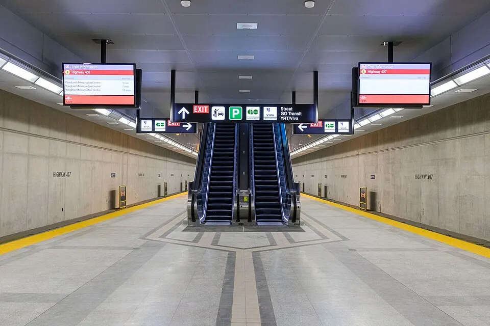

Signal
SignalStation atlas / Highway 407
Station history
Highway 407


Station history
The subway opened west of Jane Street beside Highway 407. Its regional bus terminal gave GO bus riders a transfer to the subway before reaching downtown Toronto.
GO bus routes serving York University’s Keele campus moved here. University-bound riders continued by subway to York University or Pioneer Village.